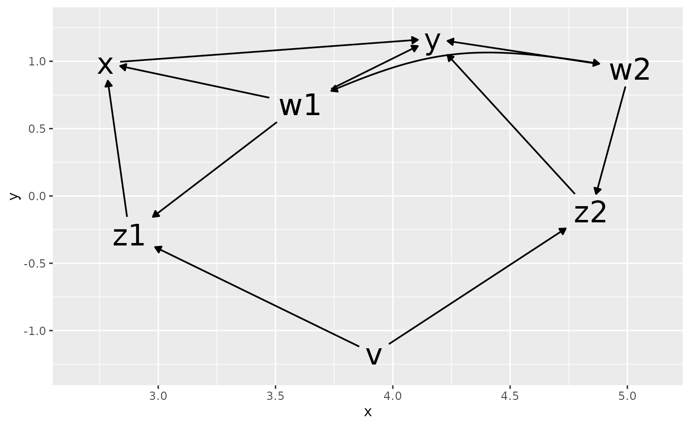
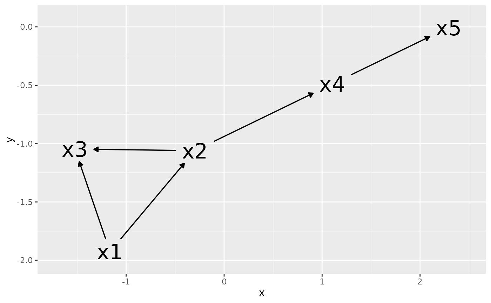

ggdag_classic() is a wrapper to quickly plot DAGs in a more
traditional style.
Usage
ggdag_classic(
.tdy_dag,
...,
size = 8,
label_rect_size = NULL,
text_label = "name",
text_col = "black"
)Arguments
- .tdy_dag
input graph, an object of class
tidy_dagittyordagitty- ...
additional arguments passed to
tidy_dagitty()- size
text size, with a default of 8.
- label_rect_size
specify the
fontsizeargument inggraph::label_rect; default isNULL, in which case it is scaled relative tisize- text_label
text variable, with a default of "name"
- text_col
text color, with a default of "black"
Examples
dag <- dagify(
y ~ x + z2 + w2 + w1,
x ~ z1 + w1,
z1 ~ w1 + v,
z2 ~ w2 + v,
w1 ~ ~w2
)
ggdag_classic(dag)

ggdag_classic(dag) + theme_dag_blank()
ggdag_classic(dagitty::randomDAG(5, .5))
